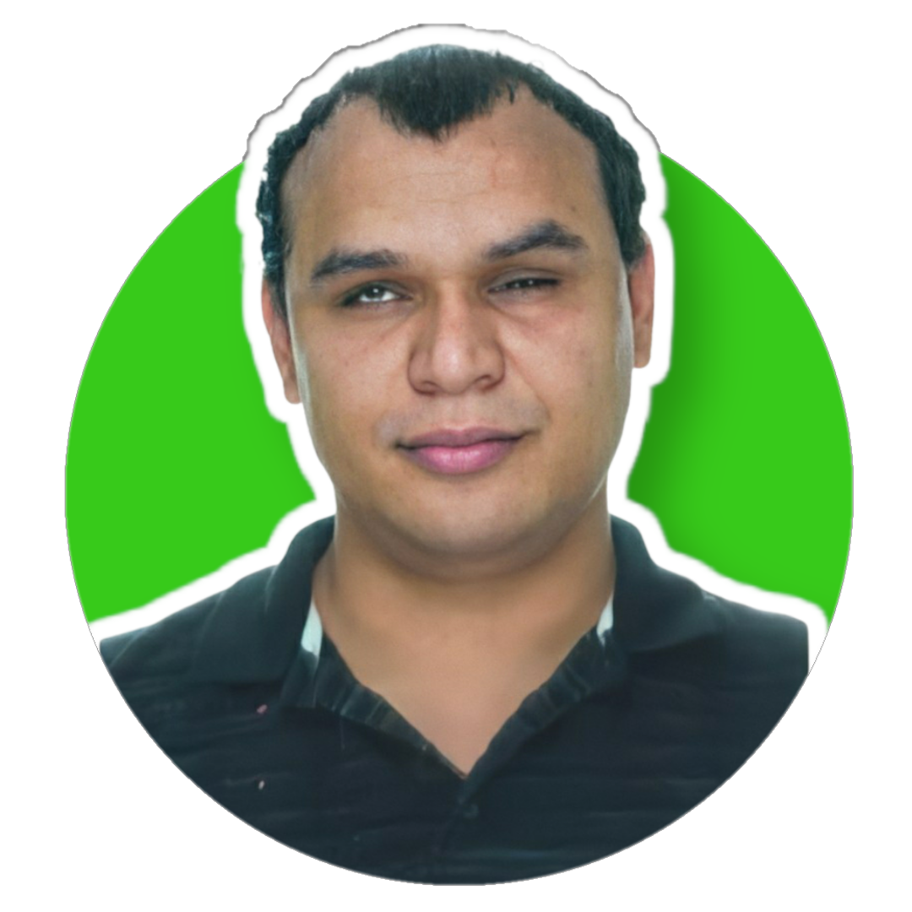

Perfil Com LinkedIn e Profissional

Juliano Lopes da Costa
Visual Total
Eu sou consultor e desenvolvedor de software, graduado em Análise e Desenvolvimento de Sistemas. Possuo 3 anos de experiência e consigo me comunicar em inglês e espanhol. Atuei em projetos full stack na empresa ThoughtWorks com tecnologias como Java e React, impactando na área de acessibilidade web e mobile, contribuindo na abertura de mercados internacionais para venda dos produtos dos clientes (mais de 90% de acessibilidade), aumentando qualidade das aplicações, SEO e usabilidade. Atualmente desenvolvo para web em HTML, Javascript e PHP no STM, além de ministrar um curso de introdução à programação de sistemas.

Lucas Silva Soares Barreto
Auditiva
Tem 24 anos e é bacharel em Engenharia Civil pela UNIME. Atuou 1 ano e 7 meses como estagiário na área de Engenharia Civil. E agora quer atuar na área de Tecnologia por gostar de entender as coisas, por curiosidade, encanto e paixão, será ainda melhor com seu melhor amigo Caio Ferraz, que também está participando do programa Itaú Tech.
Caio Ferraz Porto
Auditiva
Itaú Tech será jornada de profissional da minha vida; Bacharelado em Sistemas de Informação em 2019.2 na UNIFACS; Auxiliar de Escritório na área de administrativo; Estagiário de Desenvolvedor de Aplicativo Java na área de Informática do projeto na faculdade; Acredita trabalhar profissionalmente ao lado do seu melhor amigo Lucas Silva Soares, que também está no programa Itaú Tech.

Laís Sayuri Yasunaka
Auditiva
Atuei nas áreas de Relacionamento com Clientes, Informações Médicas e Comercial Excellence há nove anos, estou atuando como assessora parlamentar da senadora federal Mara Gabrilli para atender as necessidades das pessoas com deficiências e participei em alguns torneios com associações e federações surdas no Brasil. Fiz os cursos como Power BI, Excel e Access Avançado. Minha paixão é tecnologia, pretendo aprender e ter novos conhecimentos sobre tecnologia de hoje.

Suzana Alves
Visual Parcial
Profissional da área financeira, atuação em contas a pagar e tesouraria, controle de fluxo de caixa e conciliação bancária, mais de sete anos de experiência em controladoria financeira na Diretoria de Mkt e Comunicação de O Boticário. Atualmente responsável pelo controle de investimento em Mídia Grupo Boticário (Marcas como O Boticário, Quem Disse Berenice?, Eudora e O.U.I), criação de Dashboards em Power BI para análise eficiência investimento e ROI, cursando Big Data e Inteligência Analítica na Uniasselvi. Em busca de mudança de carreira para área tech, seja em desenvolvimento ou analytics.
Jefferson Miranda Soares
Visual Total
Cursando análise e desenvolvimento de sistemas, eu tenho grande interesse no ramo da tecnologia. Atuei em em cargos administrativos nas empresas Uninter S.a e Fiat Barigui, tenho grande facilidade em estruturação e desenvolvimento de projetos.
Marcelo Augusto de Oliveira
Visual
Atualmente trabalho como analista de qualidade na empresa de tecnologia SOFtPLAN. Também fui atleta por 10 anos. Curso Sistemas de Informação na UNISUL. Já trabalhei em manutenção de redes no ministério público de Santa Catarina.

Gisele Priscila da Silva Luti
Visual Total
Profissional de recursos humanos a 5 anos: Atuei em recrutamento e seleção, treinamento e desenvolvimento. Formada em Gestão da Tecnologia da Informação em 2016, meu sonho sempre foi iniciar a carreira como DEV ou tester, tenho paixão por métodos ágeis.

Caio Vinícius Neves Silva
Auditiva
Formando em Análise e Desenvolvimento de Sistemas. Tenho atuado na área de Recursos Humanos por muitos anos, e estou doido para entrar na área de Desenvolvimento pois é a área onde eu mais sinto à vontade devido à minha paixão pela programação. Portanto, faço curso intensivo de Developer Web Full Stack na Digital House e tenho conhecimentos em JavaScript, HTML, CSS, Express e Node.JS.

Marcos da Silva Vieira
Visual Total
Atuo a 2 anos como profissional em desenvolvimento PHP, possuo experiência em avaliação e teste de acessibilidade em sites, plataformas e materiais de cursos, sólidos conhecimentos em java script e html. Formado em análise e desenvolvimento de sistemas, cursando bacharel em sistema de informaçao e pós em tecnologia para aplicações web.